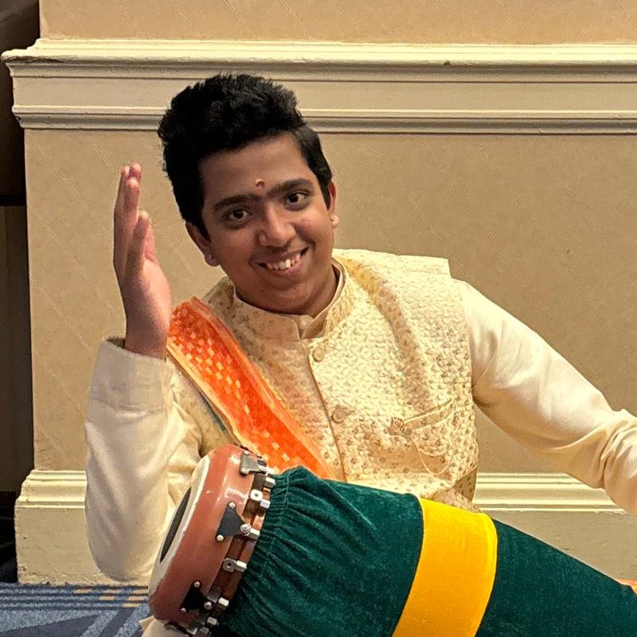

About
A student-led project on rhythm and memory
SvaraScience began with one question from one student, and grows by testing it carefully and teaching what works.

Founder
Ajay Siva Vaithiyanatha Siva
Ajay is a 10th grader at MCTS Health Science Academy in Mercer County, New Jersey. He developed CLAP from nine years of Carnatic music training, and is testing it with feedback from a Rutgers memory researcher. A mridangam player and vocalist with 12 first-place titles, he teaches weekly mridangam classes to young students, volunteers year-round at Capital Health Medical Center, and plans to become a doctor who studies and treats the brain.
Founder's recognition
Svara Learning in action
MCTS Neuroscience Society
A new school club, with Mr. George Gent as faculty advisor. It will run interactive memory activities and CLAP "Study Smarter" workshops, and later take them to other schools.
Teaching mridangam
Weekly one-on-one classes for young students, each lesson adapted to the child, using CLAP ideas such as locking everyday words onto beats. Teaching only; no research data is collected from these students.
Podcast · NPR Student Podcast Challenge 2026
She Never Called It Neuroscience — A Story About Memory, Music, and the Brain
Mridangam and vocals performed live at the same time, not layered later.
Get in touch
Teachers, researchers and students interested in CLAP, future workshops or the study are welcome to write.
hello@svarascience.org